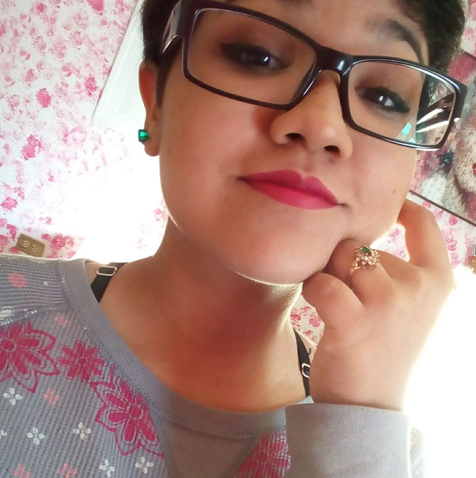

About me
I am currently studying Plastic Arts at Universidad Autonoma de Chihuahua having just completed my 3rd year. I obsess over the minor details in every work I do and am passionate in getting into a more professional work to effectively work on your side by freeing you of the burdens of carrying out repetitive tasks through automative processes.